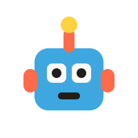
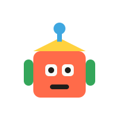
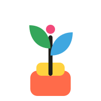

10–14 årOpfind din egen gadget
Byg en helt ny opfindelse fra bunden – af genbrugsdele, motorer, sensorer og en god portion stædighed. Fra første skitse til noget, der faktisk virker (næsten altid).
Workshops & temaer
Hos Gro arbejder vi i temaforløb, hvor I går fra idé til skitse til noget, man faktisk kan røre ved. Her er nogle af de temaer, I kan møde i værkstedet – nye kommer hele tiden til, ofte fordi nogen foreslog dem.
Eksempler på temaer
Alle forløb tager udgangspunkt i jeres egne idéer – og krydrer dem med nyt værktøj, nye materialer og ny inspiration undervejs.

10–14 årByg en helt ny opfindelse fra bunden – af genbrugsdele, motorer, sensorer og en god portion stædighed. Fra første skitse til noget, der faktisk virker (næsten altid).

11–16 årVi blander det analoge og det digitale: pap, lim og papirklip møder micro:bit og enkel kode, så jeres model kan lyse, bippe og bevæge sig.
Tag udgangspunkt i noget, der irriterer dig i hverdagen – og design en løsning. Vi øver os i at gå fra "det er da bare irriterende" til "det kan vi løse".

Alle aldreVi bygger små maskiner, redskaber og systemer med naturen som inspiration – fra selvvandende plantekasser til vejrstationer af skrammel.
Lær at fortælle om din idé, så andre bliver lige så begejstrede som dig selv. Med sparring fra lokale iværksættere, der selv har stået der.
Vær med til at forme selve Idéværkstedet: tegn, byg modeller og foreslå nye indretninger og funktioner – og se dem blive til virkelighed.
Sådan foregår en workshop
Vi holder rammerne enkle, så der er mest mulig tid til at bygge, fejle, justere og prøve igen.
Vi starter med et tema og en hurtig brainstorm – ingen idé er for vild til at blive skrevet ned.
Vi tegner, klipper, limer, skruer og koder – med værktøj og materialer, der passer til opgaven.
Det går sjældent rigtigt første gang – og det er helt fint. Vi tester, fejler og prøver igen.
Vi runder af med at vise hinanden, hvad vi har bygget – og fejre det, uanset hvor "færdigt" det er.